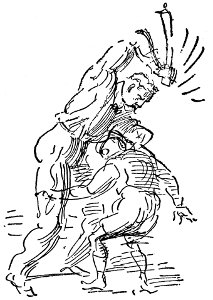
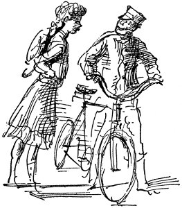
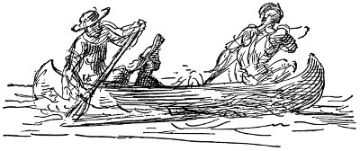
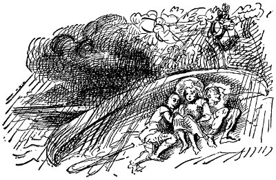
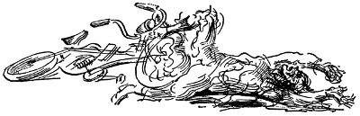

moon'un patenti işe yaramadı
Kansas seçimlerini devrimciler kazandı Oak Park can yoldaşları ayrılıyor Sekiz bin kişi araba yolculuğuna çıkıyor kızın kocası için yalvardığını söyledi
yöneticiler işlerin iyiye gittiğini düşünüyorlar
Ah, sen güzee-lim bebek
Sen koskoca büyük güzelim bebek
bu işin içinde neler olduğunu dünya anlayamaz dedi kadın. Bayağılığı, kaba sabalığıyla gündelik maddesel bir ilişki gibi görünüyor, ama hiç ilgisi yok. Adam, dürüst ve içten. Onu tanıyorum. Onunla omuz omuza savaştım. Şimdi yüreğim onunla.
Bırak dolayayım kollarımı sana
Balım mutlu değil miyim seni bulduğuma
yazortası bitkinliğinde hemen hemen hareketsiz
kaldı iş dünyasının milyonlarca kişi izliyor
ayyaşlar kovuldu
savcılar et krallarının kapısına dayandı
aşkı Vesuvius'la karşılaştırdı süslü sokaklar serüven düşkünleri için tuzaklarla dolu
Balım mutlu değil miyim seni bulduğuma
Ah sen güzelim bebek
Sen koskoca büyük güzelim bebek
beyaz atı doruyla değiştiriyor
Madero'nun birlikleri Parral Savaşı'nda isyancıları yendi Roosevelt Illinois'de kazandı söylev dinleyicileri uyuttu Chicago daha çok su istedi
anarşist diz çökerek her şeyi itiraf etti
amerikan bayrağını öptü
güneş ışığı eylemi yayılıyor
dört numaralı bomba rıhtım savaşında patladı
batı yakası barı havaya uçtu
Çarşamba günü gazetelerde çıkan ve dilinin arkasındaki kanserli urun alınması için St. Luke Hastanesi'nde özel bir odada ameliyat edilen kişinin General Grant olduğunu bildiren haber, hem hastane yetkililerince hem de öyküyü bilinçli bir uydurma olarak niteleyen Yüzbaşı Howzes'ca yalanlanmıştır.
Sine-göz (13)
römorkör kaptanıydı gözü kapalı bilirdi ırmağı Indian Head'den Virginia Burnu'na ve koya Batı Yakasından Baltima'ya ve Alexandria'da tuğla evde otururdu kaptan köşkü yüzlerce sönmüş pipo kokusuyla dolu
işte şu Mayflower Başkan'ın yatı ve şu da Dolphin şurdaki de bizim emektar savaş gemisi Tippecanoe şu da gümrük motoru şimdi de polis motorunu geçiyoruz.
kaptan Keen kaptan köşkünün tavanındaki düdüğün ipini çekmek için uzanınca bileğinin kara kıllarının altında bileğine dövülmüş kırmızılı yeşilli bileziği görebilirsin
Emektar kaptan Gifford benim canciğer dostumdu birçok kere onunla istiridye çıkardık Doğu Kıyılarından o sıralar istiridye korsanları genç delikanlıları sarhoş edip zorla gemilere götürürler kış boyu çalıştırırlar kıyıya yüzmedikçe kurtulamazdın su da öyle kahrolasıca soğuktu moruk da çocukların giysilerini alırdı bi bocurgatın evin ya da öyle bi şeyin yanına demirlediğimizde kıyıya çıkamasınlar diye evlat öyle canavar heriflerdi o istiridye korsanları dinine yandığım bi seferinde delikanlının biri vardı yere yuvarlanana değin dövdüler gemiden atıverdiler istiridyeleri maşalarla topladık deniz dibini tarayarak şu istiridye korsanları gibi kışın en berbat işleri yaptık iplerin üzerinde sular donar ellerini parça parça doğrar tarak boyna düşer biz ellerimizle buzlu sudan kaldırır yerleştirirdik birinde de ceset çıkardık Nedir ceset? Dinine yandığım ceset ölmüş adam bedenidir evlat gencecik de biriydi anadan doğma sanki bağlama direğiyle dövülmüştü korkunç bir şey ya da belki kürekle bence belki de çalışmak istemedi ya da hastaydı ya da öyle bir şey moruk ölene dek dövmüştü inan bana istiridye korsanıydı başka şey değil.
Janey
Janey küçükken Georgetown'da, M Caddesi'nden tepeye doğru birkaç bina sonraki, eski, yıkık dökük tuğla evde otururdu. Evin ön tarafı hep karanlık olurdu, çünkü anne ağır tül perdeleri her zaman kapalı tutar, dantel şeritli, sarı keten güneşlikleri hep indirirdi. Pazar öğle sonraları Janey, Joe, Ellen, Francie ön odada oturup resimlere bakmak ya da kitap okumak zorundaydılar. Janey'le Joe, güldürü sayfasını birlikte okurlardı çünkü onlar büyük çocuklardı, ötekiler yalnızca bebekti, nasıl olsa neyin gülünç olduğunu anlayamazlardı. Baba Sunday Star gazetesinin geri kalanı kucağında, oturur, genellikle öğlen yemeğinden sonra kocaman mavi damarlı elinde buruşturduğu başmakaleyle uyurdu, bu yüzden de çocuklar, yüksek sesle gülemezlerdi. Güneşliklerin dantellerinden süzülerek titreşen incecik güneş ışığı dilimleri, babanın dazlak kafasında, burnundaki tek büyük kırmızı çıkıntıda, aşağı sarkmış bıyığında, benekli yabanlık yeleğinde, lastik şeritle dirseğin üstüne toplanmış, parlak kol düğmeleri olan beyaz, kolalı gömlek kolunda dururdu. Janey'le Joe, aynı iskemlede oturup kaptanın taburesi altında fişek patlatan çizgi roman kahramanı Katzenjammer çocuklarının yaptıklarına gülerlerken birbirlerinin kaburga kemiklerinin usulca sarsıldığını hissederlerdi. Küçükler de onların güldüğünü görüp gülmeye başlardı. “Kapayın çenenizi, tamam mı,” diye fısıldardı Joe onlara. “Neye güldüğümüzü bilmiyorsunuz.” Ara sıra, fırfırlı, solmuş leylak rengi giysisinin içinde, üst katta, arkadaki yatak odalarından birinde uzanmış pazar öğle sonrası şekerlemesini yapan anneden hiç ses çıkmıyorsa, babanın uzun horultunun ardından gelen küçük fıslamalarla uyumasını uzun süre dinledikten sonra Joe, usulca iskemlesinden kayar, Janey soluğunu tutarak ön koridorda onun peşinden gider, birlikte ön kapıdan çıkarlardı. Tokmak çarpmasın diye bir kez kapıyı yavaşça kapadılar mı Joe ona tokat atıp bağırırdı. “İşte oldu.” Sonra da tepeden aşağı M Caddesi'ne doğru koşar, Janey kendisini bırakıp kaçacak diye korkudan yüreği çarparak, elleri buz gibi, ardından koşmak zorunda kalırdı.
Kışları, sabah çocuklar okula giderken tuğladan kaldırımlar buz tutmuş olur, zenci kadınlar kapılarının önüne kül dökerlerdi. Joe, kız oldukları için hiçbir zaman onlarla yürümezdi, ya arkada kalır ya önden koşardı. Janey de onunla yürümek isterdi, ama eline sıkı sıkı yapışmış küçük kız kardeşlerini bırakamazdı. Bir kış, adı Pearl olan, caddenin tam karşısında oturan melez kızla yokuşu hep birlikte çıkmak alışkanlığını edindi. Pearl'ün yanında her zaman Wisconsin Caddesi'ndeki küçük dükkândan muzlu şekerlemeler, akideler alacak bozuk parası olur, aldıklarının yarısını Janey'e verir, bu yüzden de Janey onu çok severdi. Bir akşamüzeri Janey onu oynamak için çağırdı, birlikte arka bahçede çiçekli çalılıkların altında evcilik oynadılar. Pearl gidince mutfaktan annenin sesi onu çağırdı. Anne, solgun kollarını açıkta bırakacak biçimde giysisinin kollarını sıvamış, damalı önlüğünü takmış, elleri un içinde akşam yemeği için börek yapıyordu.
“Janey, buraya gel,” dedi. Sesindeki buz gibi titreşimden Janey terslik olduğunu anladı.
“Evet, anne.” Janey annesinin önünde durdu, iki yandan kaskatı bağlanmış sarı saçlarını, başını sallayarak savuruyordu.
“Kıpırdanıp durma kızım. Tanrı aşkına . . . Janey, seninle bir konuda konuşmak istiyorum. Bu sabah buraya getirdiğin şu zenci kız . . .” Janey'in yüreği ağzına geldi, içini kötü bir duygu kapladı, nedenini bilmeksizin yüzü kıpkırmızı kesildi. “Şimdi, sakın beni yanlış anlama. Ben de zencileri severim, onlara saygı duyarım, bazıları kendi ölçüleri içinde, iyi, özsaygıları olan kişilerdir . . . Ama o küçük zenci kızı bir daha eve getiremezsin. Zencilere incelikle, saygıyla davranmak iyi yetiştirilmiş olma belirtisidir . . . Ana tarafından çok iyi bir aileden gelmiş olduğunu unutma . . . O günlerde Georgetown çok değişikti. En güzel çimenliklerle çevrili koskoca bir evde otururduk . . . ama hiçbir zaman sana denk kişilermiş gibi ilişki kuramazsın zencilerle. Bu çevrede yaşadığımız için böyle şeylere dikkat etmen çok daha önemli . . . Bu tür davrananlara ne beyazlar ne de zenciler saygı duyar . . . Hepsi bu Janey, anladın değil mi? Şimdi koş dışarı, oyna. Az sonra yemeğe oturacağız.”
Janey konuşmaya çalıştı, ama beceremedi. Avlunun ortasında, pis su borularının üzerindeki ızgarada kaskatı durarak arka duvara baktı. “Zenci âşığı,” diye bağırdı Joe kulağının dibinde. “Zenci âşığı hayda haay-da . . . Zenci âşığı haay-da.” Janey ağlamaya başladı.
Joe sarı saçlı, çok az konuşan, küçücükken bile çok iyi beyzbol oynayabilen bir çocuktu. Rock Körfezi'nde yüzmeyi, dalmayı öğrendi, büyüdüğünde tramvaylarda vatman olmak istediğini söylerdi hep. Yıllarca en iyi arkadaşı, babası B.O. Şirketi'nde tren makinistliği yapan Alec McPherson'du. Joe da makinist olmak istedi. Janey, ses çıkarmazlarsa iki oğlanın peşinde dolaşır, ortalıkta denetleyecek kişiler bulunmadığında bazen sahanlıkta birkaç blok öteye gitmelerine göz yuman birkaç kondüktör ve vatmanla dost oldukları Pennsylvanian Caddesi'ndeki tramvay deposuna gider, kanal boyunda gezinir, kurbağalar yakalayıp suya düştükleri, birbirlerinin üzerine çamur sıçrattıkları Rock Körfezi'ne kadar uzanırdı.
Yaz akşamları, yemekten sonra alacakaranlığın uzun sürdüğü zamanlarda, çevredeki öteki çocuklarla Oak Tepesi Mezarlığı yakınlarında, boş arsaların uzun çimenleri arasında hırsız polis oynarlardı. Ortalıkta kızıl ya da kızamık salgını olduğu, Anne onları dışarı bırakmadığı sıralar uzun aralar verirlerdi oyunlara. O zamanlarda Alec gelir, arka bahçede tavşan kaç oynarlardı. Bunlar, Janey'in en çok sevdiği günlerdi. Böyle durumlarda, oğlanlar ona kendilerinden biriymiş gibi davranırlardı. Yaz akşamlarının alacakaranlığı boğucu sıcağıyla, ateşböcekleriyle dolu inerdi üzerlerine. Baba, keyfi yerindeyse onları tepedeki N Caddesi'nde bir dükkândan dondurma almaya gönderirdi. Kısa kollu gömlekli delikanlılar, hasır şapkalar giyer, sivrisineklerden korunmak için saçlarına kav parçası iliştirmiş kızlarla ortalıkta dolanır, kapı önlerine doluşmuş, gülen, arada bir ansızın dişlerini parıldatarak, bembeyaz gözaklarını devirerek usulca konuşan zenci ailelerden ağır pislik kokusuyla karışık ucuz parfüm kokusu yükselirdi. Yoğun, yapış yapış gece, korkunçtu. Uzaklardaki gök gürültüleriyle, ağustosböcekleriyle, M. Caddesi'ndeki trafik uğultusuyla homurdanır, mırıldanır, sokağın havası, sık ağaçların altında yoğun, boğucu olurdu, ama Alec'le, Joe'yla olduğu zamanlar korkmazdı, sarhoşlardan, ayaklarını sürüyen iriyarı zencilerden bile. Geri döndüklerinde Baba purosunu içer, onlar arka bahçede otururlar, sivrisineklere yem olurlar, Anne, Francine Teyze, küçük çocuklar dondurmalarını yer, Baba yalnızca purosunu içip gençken Chesapeake'te römorkör kaptanı olduğu günlerin öykülerini anlatırdı. Fırtınalı bir havada güneybatıda Kettlebottoms'da Nancy Q adlı üç direkli gemiyi batmaktan kurtarmıştı. Sonunda yatma zamanı gelir, Alec evine gönderilir, Janey karşı duvardaki küçük yataklarında uyuyan iki küçük kız kardeşiyle paylaştığı üst kattaki, havasız, küçük arka odaya gidip yatmak zorunda kalırdı. Belki de fırtına patlar, Janey her yanı korkudan buz kesmiş, tavana gözlerini dikerek, uykularında içlerini çeken küçük kardeşlerini dinleyerek uyanık dururdu, taa Anne'nin telaş içinde evde koşuşturarak camları kapamasının çıkardığı güven verici sesi, bir kapının çarpmasını duyuncaya dek. Rüzgâr, sızlanan sesler çıkarır, yağmur takırdar, bira yüklü kamyonlardan binlercesinin köprüden geçerken kükremesine benzeyen seslerle, korkunç bir gümbürtüyle gök gürültüsü, çok yakınında patlardı. Böyle zamanlarda Joe'nun yanına gidip onunla birlikte yatağa büzülmek isterdi. Bazen merdiven başına kadar gitmesine karşın nedense korkardı, Joe ona gülecek, tabansız diyecek diye.
Hemen hemen haftada bir dayak yerdi Joe. Kimi günler Baba çalıştığı Patent Ofisi'nden öfkeli, keyfi kaçmış gelir, kızlar korkarlar, evin içinde küçük fareler gibi sessizce dolaşırlardı. Oysa Joe sanki onu kışkırtmaktan hoşlanır, arka koridorda ıslık çalarak dolaşır, burunları tahta, nalçalı pabuçlarıyla korkunç gürültü çıkartarak merdivenlerde bir aşağı bir yukarı takır tukur iner çıkardı. Sonra Baba onu azarlamaya başlar, Joe tek sözcük etmeden, küskün mavi gözlerini döşemeye dikmiş, önünde dururdu. Baba, önü sıra Joe'yu iteleyerek merdivenlerden banyoya yönelince Janey'in içinde bir şeyler düğümlenir, buz keserdi. Neler olacağını bilirdi. Baba kapının arkasından ustura kayışını alır, çocuğun başını, omuzlarını, koltuğunun altına sıkıştırır, döverdi. Joe dişlerini sıkar, morarır, tek söz söylemez, Baba dayaktan yorulunca birbirlerine bakarlar, Joe yukarı odasına gönderilir, Baba tir tir titreyerek, hiçbir şey olmamışçasına aşağı iner, Janey yumruklarını sıkmış, usulca bahçeye süzülür, kendi kendine fısıldardı: “Ondan nefret ediyorum . . . ondan nefret ediyorum . . . ondan nefret ediyorum.”

Yağmurun hafiften çiselediği bir cumartesi akşamı, karanlıkta bahçe duvarına yaslanmış, yukardaki aydınlık pencereye bakıyordu. Baba'yla Joe'nun kavga eden seslerini duyabiliyordu. Ustura kayışının ilk şaklayışında düşüp öleceğini sandı. Neler söylediklerini duyamıyordu. Sonra ansızın başladı, kayışın şaklaması, Joe'nun soluğunu boğması. On bir yaşındaydı, içinde bir şeyler çözüldü. Saçları yağmurdan sırılsıklam, içeri koştu. “Anne, Joe'yu öldürüyor. Durdur onu.” Annesi ovmakta olduğu tencereden kaldırdı bembeyaz olmuş, çaresiz, asılmış yüzünü. “Ah, yapacak hiçbir şey yok.” Janey yukarı koşup banyo kapısını yumruklamaya başladı. “Yeter, yeter,” diye bağırıyordu. Çok korkmuştu, ama benliğinden de güçlü bir şeyin egemenliği altındaydı. Kapı açıldı, işte oradaydı utanç içinde bakan Joe, yüzü kıpkırmızı, elinde kayışla Baba.
“Beni döv . . . kötü olan benim . . . Joe'yu böyle dövmene katlanamıyorum.” Korkmuştu. Ne yapacağını bilemiyordu, gözlerine yaşlar doldu.
Baba'nın sesi beklenmedik biçimde yumuşaktı:
“Bu gece sana yemek yok, doğru odana git, sakın aklından da çıkarma, senin kendi savaşlarını vermek için yeterince uğraşacağın şey var, Janey.”
Odasına koşup titreyerek yatağına uzandı. Uyuduğunda Joe'nun sesi uykusundan sıçrattı onu.
Üzerinde sabahlığıyla kapıda duruyordu. “Bana bak, Janey,” diye fısıldadı. “Bir daha böyle şey yapma, anladın mı? Ben kendi işimi görürüm, anladın mı? Bir kız böyle erkeklerin arasına giremez. İş bulup yeterli parayı kazanınca kendime tüfek alacağım. Babam beni dövmeye kalkışırsa vurup öldüreceğim.” Janey burnunu çekerek ağlamaya başladı. “Ne diye zırlıyorsun, dünyanın sonu gelmedi ya.”
Janey onun yine yalınayak, parmak uçlarında merdivenleri indiğini duydu.
Lisede okurken ticaret derslerine girdi, daktilo, steno öğrendi. Solgun, ince yüzlü, kirli sarı saçlı, sessiz, öğretmenlerinin sevdiği bir kızdı. Parmakları hızlıydı, daktiloyu, stenoyu çabucak öğrendi. Okumayı seviyordu, kitaplıktan Fincanın İçi, Güçlülerin Savaşı, Barbara Worth'un Zaferi gibi kitaplar alırdı. Annesi boyuna, çok okursa gözlerini bozacağını söyleyip duruyordu. Okurken kadın kahramanın kendisi olduğunu, kötü yola sapan, ama gerçekte incelikli biri olan, her tür özveride bulunabilecek, tıpkı İki Kentin Öyküsü'ndeki Sidney Carton gibi kişinin Joe, erkek kahramanın da Alec olduğunu düşlüyordu.
Ona göre Alec, Georgetown'daki en yakışıklı, en güçlü erkekti. Kısa kesilmiş siyah saçları, çilli, çok beyaz teni, güçlü, omuzları dimdik yürüyüşü vardı. Her neyse, ondan sonra da Joe en yakışıklı, en güçlü erkek, en iyi beyzbol oyuncusuydu. Herkes böylesine iyi oyuncu olduğu için onun lise öğrenimini sürdürmesi gerektiğini söylüyordu, ama Baba, birinci yılın sonunda bakmak zorunda olduğu üç kızı bulunduğunu, bu nedenle de Joe'nun çalışacağını söyledi. Böylece Joe telgraf dağıtıcısı oldu. Janey, okuldaki kızlar kendisiyle alay edinceye kadar Joe'yla, onun üniformasıyla çok gururlandı. Alec'in anasıyla babası, lisede iyi notlar alırsa üniversiteye göndereceklerine söz vermişlerdi, bu yüzden de çok çalışıyordu. Joe'nun tanıdığı çocukların çoğu gibi kaba saba, pis sözler eden biri değildi. Baş başa kalmak ister gibi görünmemesine karşın Janey'e hep çok iyi davranıyordu. Janey, Alec'e âşık olduğunu çok iyi biliyordu.

Hayatının en güzel günü, hep birlikte Büyük Çağlayanlar'a kayıkla gittikleri boğucu sıcak bir yaz günüydü. Bir gece önceden yemek hazırlamıştı. Sabahleyin buz kutusunda bulduğu bifteği de yemeklerine ekledi. O sabah hiç kimse uyanmadan, saat yedi sıralarında, usulca evden süzüldüklerinde tuğla evlerin, koyu, yaz yeşili ağaçların sıralandığı tüm sokakların sonunda mavi, ince sis vardı.
Alec'le tren istasyonunun önündeki köşede buluştular. Bacakları açık, elinde tavayla durmuş onları bekliyordu.
Cabin John Köprüsü'ne gitmek için, kalkmak üzere olan trene koşarak yetiştiler. Sanki özel olarak tutmuşlarcasına tüm kompartıman onlarındı. Tren homurtularla, beyaz badanalı gecekonduları, kanal boyunca sıralanmış zenci kulübelerini, altı ayak uzunlukta, dalgalanan mısırların asker gibi sıralandıkları tepeleri geçti. Güneş ışığı, püskül püskül mısırların dalgalanan sarkık yapraklarında mavi beyaz ışıltıyla parlıyordu. Tangırdayan, sarsılan elektrikli trenin çevresinde ışıltı, çekirgelerin, sineklerin vızıltısı, sıcak buharın içinden solgun gökyüzüne yükseliyordu. Joe'nun istasyonda bir zenci kadından satın aldığı tatlı yaz elmalarını yediler, vagonun içinde birbirlerini kovaladılar, köşe minderlerinde alt alta üst üste yuvarlandılar. Bitkin düşene kadar kahkahalar attılar. O sırada tren ormandan geçiyordu, Glen Yankıları'nın kızaklarını ağaçların arasından görebiliyorlardı, çılgınlar gibi eğlenmiş olarak Cabin John'da trenden indiler.

Yemyeşil kıyılarının arasında, sabahın beyaz parlaklığında, kahverengi ve siyah akan ırmağa bakmak için köprüye koştular, sonra Alec'in bir arkadaşının olan küçük sandalı, birkaç paket bisküviyi bulup yola çıktılar. Alec'le Joe kürek çekti, Janey kazağını oturak tahtasına sarıp yastık yaparak sandalın dibine yerleşti. Alec önde kürek çekiyordu. Boğucu bir sıcak vardı. Küreğe her asılışında kıvrılan sırtının çukurlarına yapışıyordu gömleği terden. Bir süre sonra çocuklar soyunup giysilerinin altına giymiş oldukları mayolarıyla kaldılar. Alec'in çıplak sırtını izlemek Janey'in boğazını kuruttu, kürek çekerken şişkinleşen kollarındaki kaslar ona hem mutluluk, hem korku veriyordu. Janey beyaz pamuklu giysisiyle oturmuş, yosunlu kahverengi yeşil suya elini daldırıyordu. Buz parçaları gibi parlayan nilüferler, beyaz su çiçekleri toplamak için durdular, nilüferlerin çamurlu köklerinin ıslak kokusu ortalığı kapladı. Gazozları ısınmıştı, öylece içtiler, boyuna şakalaştılar, Alec yengeç yakaladı, Janey'in üstünü başını yeşil çamurlu sulara buladı, ama Janey hiç aldırmadı, Joe'ya kaptan dediler, azıcık yavaşlayıp deniz kuvvetlerine katılacağını söyledi, Alec yapı mühendisi olacağını, deniz motoru yapacağını, hepsini gezmeye götüreceğini anlattı, Janey çok mutluydu, onu da erkek çocukmuş gibi aralarına alarak konuşuyorlardı. Hareketli kanal setlerinin bulunduğu çağlayanların altından, ırmağın sonuna kadar kayıkla uzun bir yol aldılar. Janey yemekleri, kürekleri, tavayı taşıdı, oğlanlar kayığın altında ter döküp sövgüler yağdırdılar. Sonra Virginia yakasına kürek çekip yerinden kopmuş, grileşmiş yosunlu iki kaya arasındaki boşlukta ateş yaktılar. Joe bifteği kızarttı, Janey yapmış olduğu sandviçleri, kurabiyeleri açtı, pişirmek için küllerin arasına patatesler koydu. Kanalın yanındaki tarladan koparmış oldukları mısırları da kızarttılar. Yeterince tereyağı getirmemiş olmaları dışında, her şey çok güzeldi. Yemekten sonra közlerin çevresine oturarak kurabiyelerini yediler, alkolsüz biralarını içtiler, yavaş yavaş konuştular. Alec'le Joe pipolarını çıkardıklarında Janey, Büyük Pomotac Çağlayanları'nda oturmuş pipo içen iki erkekle birlikte olduğu için çok mutluydu.
“Vay canına Janey, Joe bifteği çok güzel pişirdi.”
“Küçükken Rock Deresi'nde kurbağa yakalar, kızartırdık . . . Hatırlıyor musun, Alec?”
“Hiç hatırlamaz olur muyum, bir keresinde Janey de vardı. Amma da patırtı çıkarmıştın, Janey.”
“Derilerini yüzmenizden hiç hoşlanmamıştım.”
“O sıralarda Vahşi Doğu'nun büyük avcıları olduğumuzu düşünüyorduk. Ne çok eğlenirdik.”
Janey duraksayarak, “Böylesini daha çok seviyorum, Alec,” dedi.
“Ben de öyle,” dedi Alec. “Ne diyorum biliyor musun, keşke şimdi karpuzumuz olsaydı.”
“Belki eve dönerken ırmak kıyısında bir yerlerde buluruz.”
“Yürütmek ha, bunu bir karpuza yapamam, Joe.”
“Annem buzluğa karpuz koymuştu,” dedi Janey. “Belki eve gittiğimizde biraz buluruz.”
Joe ansızın aksileşip, ciddileşerek, “Asla eve dönmek istemiyorum,” dedi.
“Joe, böyle konuşmamalısın.” Kendini küçük bir kız çocuğu gibi hissetti, korkmuştu.
“Canım nasıl isterse öyle konuşurum . . . Tanrım, o izbe sıçan deliğinden nefret ediyorum.”
“Joe, böyle konuşmamalısın.” Janey neredeyse ağlayacaktı.
“Ne diyorduk,” dedi Alec. “Gitme zamanı da geldi artık . . . Sen ne dersin? Bir kere daha suya dalıp evin yolunu tutalım.”
Oğlanlar sudan çıkınca hep birlikte Çağlayan'a bakmaya gittiler, sonra da yola koyuldular. Ağaçlıklı, dik kıyıların altında hızla akan ırmakta yol aldılar. Öğle sonrası çok boğucuydu, sıcak, buharlı hava katmanları arasından geçtiler. Kuzeyde büyük büyük bulutlar toplanıyordu. Artık Janey için eğlence bitmişti. Yağmurun yağacağından korkuyordu. Kötü bir duygu vardı içinde, bir pisliğin akacağı duygusu. Aybaşı olacağından korkuyordu. Şimdiye kadar yalnızca birkaç kez olmuştu, bunu düşünmek bile ürkütüyordu onu, olanca gücünü alıyordu bedeninden, yaşlı, hasta, uyuz bir kedi gibi gözden yitip bir köşeye büzülmek isteği uyandırıyordu. Neler hissettiğini Joe'yla Alec'in anlamasını istemiyordu. Sandalı deviriverse ne olacağını düşündü. Oğlanlar pek güzel kıyıya yüzebilirler, kendisi boğulur, ırmağın dibini tarayarak bedenini ararlar, herkes ağlar, onun için üzülürdü.
Morumsu gri karanlık düzenli biçimde yoğunlaşıyor, bulut yığınlarının ak tepelerini boğuyordu. Her şey kurşuni beyaza, mora dönüşüyordu. Çocuklar ellerinden geldiğince hızla kürek çekiyorlardı. Yaklaşmakta olan gök gürültüsünün uğultusunu duyuyorlardı. Toz, ölü yaprak, çöp, saman dolu sıcak fırtına rüzgârı, ırmağı sarsarak onları itelediğinde artık köprü görünmeye başlamıştı.
Tam zamanında kıyıya çıktılar. “Vay canına, fırtına patlayacak,” dedi Alec. “Kayığın altına gir, Janey.” Kocaman bir kaya parçasının oluşturduğu sığınakta, çakıllı kıyıda kayığı ters çevirip altına doluştular. O sabah topladıkları, elinin sıcaklığından bumburuşuk, yapış yapış olmuş nilüferleri tutarak ortalarına oturdu Janey. Oğlanlar ıslak mayolarıyla iki yanına geçtiler. Alec'in siyah saçları çenesine değiyordu. Öteki yanında, başı sandalın bir ucunda, paçaları kıvrılmış pantolonundan çıkan ince, kahverengi ayakları, bacakları, kızın giysisinin altında Joe uzanıyordu. Ter, ırmağın suyu, Alec'in saçlarından, omuzlarından gelen erkek kokusu başını döndürdü, yağmur kırbaç gibi beyaz serpintiyle önlerine perde çekerek sandalın üstünü dövmeye başlayınca, Janey kolunu Alec'in boynuna doladı, eli uysallıkla onun çıplak omzuna değdi. Alec kımıldamadı.

Bir süre sonra yağmur durdu. “Vay vay, sandığım kadar da kötü değildi,” dedi Alec. Epeyce ıslanmış, üşümüşlerdi, ama yağmurun yıkadığı havada kendilerini yenilenmiş, iyi hissettiler. Sandalı yine suya indirip köprüye kadar gittiler. Sonra onu almış oldukları eve geri götürdüler, elektrikli treni beklemek için sığınacak küçük bir yere girdiler. Yorgun, güneşten yanmış, yapış yapıştılar. Vagon, Büyük Çağlayan'da, Glen yakınlarında kır gezintisi yaparken yağmura yakalanmış, ıslak pazar öğle sonrası kalabalığıyla tıklım tıklımdı. Janey, eve dönene kadar dayanamayacağını düşündü. Karnına korkunç sancılar giriyordu. Georgetown'a vardıklarında çocukların aralarında paylaşacakları elli sentleri vardı. Sinemaya gitmek istediler, ama Janey koşarak uzaklaştı onlardan, istediği tek şey, başını yastığa gömüp ağlayabilmek için yatağına girmekti.
O günden sonra Janey hiçbir zaman çok ağlamadı, onu mutsuzluğa sürükleyen şeyler oldu, ama soğuk, katı bir duygu egemendi içinde. Lise yılları çabucak, ders dönemleri arasında Washington'un sıcak, fırtınalı yazlarıyla, dönem sırasında arada bir Marshall Hall'da yapılan kır gezintileri ya da komşu evlerden birindeki eğlencelerle geçti. Joe, Adams Express'te iş buldu. Artık yemeklerini evde yemediği için onu pek göremiyordu. Alec motosiklet almıştı, hâlâ lisede olmasına karşın Janey onunla ilgili çok az şey duyabiliyordu. Bazen gece işten döndüğünde biraz laflamak için Joe'yu beklerdi. Hiçbir zaman sarhoş gibi görünmemesine karşın tütün, içki kokardı. Sabah yedide işe gidiyor, akşamları döndüğünde 41/2 Sokağı'ndaki bilardo salonlarını dolduran, zar atan, bovling oynayan delikanlılarla dolaşıyordu. Pazar günleri Maryland'da beyzbol oynardı. Janey onu beklemek için uyumaz ama geldiğinde işlerin nasıl gittiğini, nerede çalıştığını sorar, o da, “İyi,” der, Joe da ona okulda işlerin nasıl gittiğini sorar, kız, “İyi,” der, sonra ikisi de yatmaya giderlerdi. Arada bir Alec'i görüp görmediğini sorar, Joe dudağının kıyısında gülümsemeyle, “Evet,” der, nasıl olduğunu sorunca da, “İyi,” derdi.
Bir tek arkadaşı vardı, esmer, bodur, gözlüklü, lisede aynı dersleri alan Alice Dick. Cumartesi öğleden sonra en güzel giysilerini giyip F Caddesi'nde vitrinlere bakmaya giderlerdi. Ufak tefek bir şeyler satın alır, bir yerde durup gazoz içer, çok yoğun bir öğle sonrası geçirmiş olduklarını düşünerek arabayla eve dönerlerdi. Çok seyrek olarak Poli'de film izlerler, Janey Alice'yi eve yemeğe çağırırdı. Alice Dick, Williams'ları severdi. Onlar da onu. Açık düşünceli kişilerle birkaç saat geçirince kendini daha özgür hissettiğini söylerdi. Kendi anasıyla babası Güneyli Metodist'lerdi, çok dar kafalıydılar. Babası Devlet Basımevi'nde yazmandı, işinin devlet memurluğu yönetmeliği altına gireceğinden ödü kopardı, sürekli. İriyarı, nefes darlığı çeken, karısına, kızına el şakaları yapmaktan hoşlanan, sürekli hazımsızlıktan yakınan bir adamdı.
Alice Dick'le Janey, liseyi bitirir bitirmez işe girip evden ayrılmayı kafalarında kurarlardı. Tutacakları evi bile seçmişlerdi, Thomas Alanı yakınlarında, yeşil taştan, bir deniz subayının dul karısı ve çok seçkin biri olan, Güney yemekleri pişiren Mrs. Jenks'in yönettiği ev, yemek de veren yerler içinde en ucuz olanıydı.
Lisedeki son yılının ilkbaharında, bir pazar gecesi Janey odasında giyiniyordu. Francie'yle Ellen hâlâ arka bahçede oynuyorlardı. Sesleri, yan avludaki leylak ağaçlarından yükselen hoş leylak kokusu dalgasıyla açık camdan içeri doluyordu. Kapısı vurulup dışardan Joe'nun sesi geldiğinde, aynanın karşısında saçlarını çözmüş, kumral ve çok güzel bir kız olsa nasıl olacağını hayal ediyordu.
“İçeri gir,” dedi. “Saçlarımı düzeltiyorum.”
Önce aynadan yüzünü gördü onun. Çok beyazdı, elmacıkkemiklerinin üzerinde, ağzının çevresinde derisi gerilmişti.
“Ne var, ne oluyor, Joe?” diyerek fırlayıp karşısında durdu.
“İşte böyle, Janey,” derken sözcükler Joe'nun ağzından güçlükle, acıyla çıkıyordu. “Alec öldü. Motosikletiyle kaza yaptı. Şimdi hastaneden geldim. Öldü işte.”

Janey, sanki bu sözcükleri kafasında ak kâğıdın üzerine yazıyordu. Hiçbir şey söyleyemedi.
“Chevy Chase'den gelirken parçalandı . . . Benim atışlarımı izlemek için top oyununa gelmişti. Bir görseydin nasıl paramparça olduğunu.”
Janey boyuna bir şeyler söylemeye uğraşıyordu.
“O senin en iyi . . .”
“Tanıdığım en iyi çocuktu,” dedi Joe yumuşaklıkla. “İşte böyle, Janey . . . Ama sana söylemek istediğim şu, şimdi Alec de öldüğüne göre artık bu pis sıçan deliğinde sürünmek istemiyorum. Deniz kuvvetlerine yazılacağım. Bizimkilere sen söylersin, tamam mı?.. Ben onlarla konuşmak istemiyorum, işte böyle . . . Deniz kuvvetlerine girip dünyayı göreceğim.”
“Ama Joe . . .”
“Sana yazarım, Janey, şerefsizim yazarım . . . Sana bir sürü şey yazarım. Seninle ben . . . Şey, hoşça kal Janey.” Omuzlarından yakalayıp, beceriksizce burnundan, yanaklarından öptü. Janey'in yapabildiği tek şey, “Dikkatli ol, Joe,” diye fısıldayarak leylak kokularıyla açık pencereden içeri dolan çocukların bağrışmaları arasında, masanın önünde durmak oldu. Merdivenlerden inen Joe'nun hafif, telaşlı ayak seslerini, ön kapının kapandığını duydu. Işığı söndürdü, karanlıkta giysilerini çıkarıp yatağına uzandı. Ağlamadı.
Okulu bitirme, törenlere katılma zamanı geldi, Alice'le danslı toplantılara, hatta bir keresinde buharlı Charles McAlister gemisiyle ırmak boyunca Indian Head'e kadar süren mehtap gezisine katıldılar, büyük bir kalabalıkla birlikte. Topluluk Janey'le Alice'in hiç hoşlanmadığı biçimde kaba sabaydı. Erkeklerin bazıları durmadan içki içiyor, çiftler her gölgede birbirlerine sarılıp öpüşüyorlardı, yine de ırmakta dalgalanan ay ışığı güzeldi. Janey'le Alice iki iskemleye yan yana oturarak konuştular. Cazbant ve dans da vardı, ama dans pistinde durmuş laf atan kaba adamlar yüzünden dans etmediler, konuştular. Eve dönerlerken parmaklıkların yanında ayakta durup Alice'e çok yaklaşan Janey alçak sesle ona Alec'i anlattı. Alice olayı gazetelerden okumuştu, ama ne Janey'in onu tanıdığı ne de ona karşı bu tür şeyler duyduğu aklına gelmişti. Ağlamaya başladı, Janey onu avuturken kendini çok güçlü buldu, bu olaydan sonra çok yakın arkadaş olacaklarını sezdiler. Janey artık hiç kimseyi sevemeyeceğini fısıldadı, Alice, zaten kimseyi sevebileceğini sanmıyordu, erkeklerin hepsi de içki içer, sigara tüttürür, kendi aralarında pis şeyler söylerlerdi, kafalarında da bir tek düşünce vardı.
Temmuz ayında Alice'le Janey, Riggs Binaları'nda genel stenograf olan Mrs. Robinson'un işyerinde, tatile çıkmış kızların yerine çalışacakları işi buldular. Mrs. Robinson, ufak tefek, kır saçlı, göğsü çıkık, sesinde Kentucky'lilere özgü bir tizlik olan, Janey'e papağanları düşündürten bir kadındı. Çok titizdi, işyerindeki her şeyi incelerdi. Masasından arkaya doğru yaslanarak, “Miss Williams,” diye cıvıldardı, “şu Yargıç Roberts'in yazısı bugün mutlaka yazılmalı . . . Şekerim, söz verdik, gece yarısına kadar oturmak zorunda kalsak bile göndereceğiz. Büyük, soylu işler yapmanın yolu budur, şekerim.” Sonra yazı makineleri tıngırdar, şıngırdar, tüm kızların parmakları çılgınca oynardı, resmi yazıları, oy toplamaya çalışanların daha verilmemiş söylevlerini, arada bir gazetecinin ya da bilim adamının haberini, emlak bürolarının kısa tanıtım yazılarını, ellerinde patent bulunanların tanıtım yazılarını, doktorların, dişçilerin alacaklılarına yolladıkları mektupları daktiloya çekerlerdi.
Sine-göz (14)
Pazar geceleri balık köftelerimizi fasulyelerimizi bitirince Mr. Garfield bize çok hoş bir sesle kitap okurdu herkes öylesine sessiz olurdu ki topluiğne yere düşse duyabilirdin çünkü Ülkesini Yitiren Adam'ı okurdu çok korkunç bir öyküydü Aaron Burr çok tehlikeli biriydi bu zavallı delikanlı demişti ki “Tanrı cezasını versin Birleşik Amerika'nın umarım artık hiçbir zaman onun adını duymam” bu söylenecek en korkunç şeydi kır saçlı yargıç öylesine kibardı iyiydi
yargıç beni cezalandırdı çok uzaklara yabancı ülkelere götürdüler beni savaş gemisiyle gemiciler çok kibardı iyiydi çok incelikli ağırbaşlı çok üzüntülü sesleriyle konuştular tıpkı Mr. Garfield gibi her şey incelikliydi ağırbaşlıydı, çok üzüntülüydü savaş gemileri masmavi Akdeniz adalar ve öldüğüm zaman ağlamaya başladım hem korkuyordum öteki çocukların görmelerinden gözlerimde yaşlar olduğunu
Amerikalı ağlamaz çok kibar ağırbaşlı çok üzüntülü durur beni yıldızlı çizgili bayrağa sardıklarında savaş gemisiyle ülkeme getirdiklerinde gömüleyim diye çok üzüntülüydüm hiçbir zaman da hatırlayamadım beni eve mi getirdiklerini yoksa denize mi gömdüklerini ama ne olursa olsun sarılmıştım Bayrağa